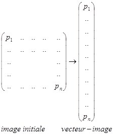
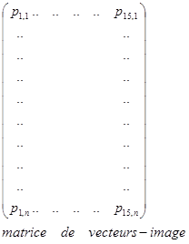
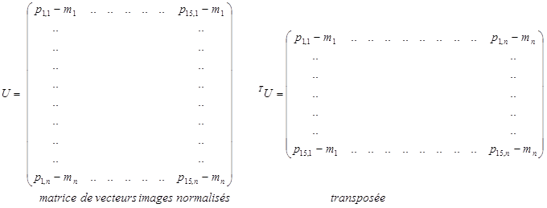
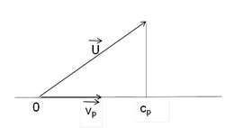
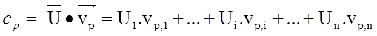
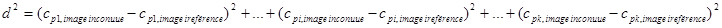

Indications.
La première étape consistera à transformer chaque image de visages de référence de 50 sur 50 pixels en un vecteur image de
dimension 50x50 = 2500.

On regroupera ensuite tous ces vecteur dans un tableau de 15 colonnes et 2500 lignes. Ce tableau est appelé matrice en mathématiques.

Il faut ensuite retrancher à chacun de ces vecteurs-images le visage moyen calculé sur les 15 visages de référence.
On obtient ainsi des vecteurs-images normalisés qui dépendent moins de la luminosité de l'image et de son contraste.
Soit U la matrice consituée par ces vecteurs normalisés.

On peut alors déterminer la matrice de covariance produit de U par sa transposée
TU et divisé par le nombre d'images : C = (U x
TU)/15.
Cette matrice possède 2500 lignes et 2500 colonnes
La seconde étape consiste à extraire les visages propres ou
vecteurs propres à partir de cette matrice C.
La troisème étape sera la détermination des composantes principales c
p des visages de référence sur les k visages propres ainsi obtenus.

Pour cela il faut calculer le produit scalaire de chaque image de référence avec chaque visage propre.
Chaque produit scalaire est la projection de l'image sur le visage propre.

Il y a donc autant de composantes principales que d'images propres pour une image iniriale.
On les enregistre ensuite dans un fichier texte.
Enfin la quatrième étape consistera à tester la méthode en déterminant si le programme est capable de reconnaître un visage.
Pour cela on calcule les composantes principales de l'image à reconnaître.
On calcule les distance Euclidienne entre l'image à reconnaître et chacun des visages de référence.

La plus petite distance donnera le visage le plus ressemblant au visage à reconnaître.